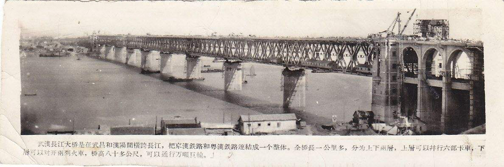
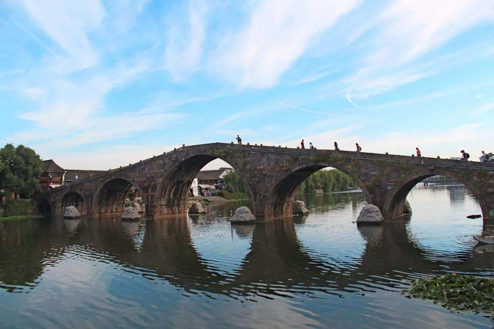
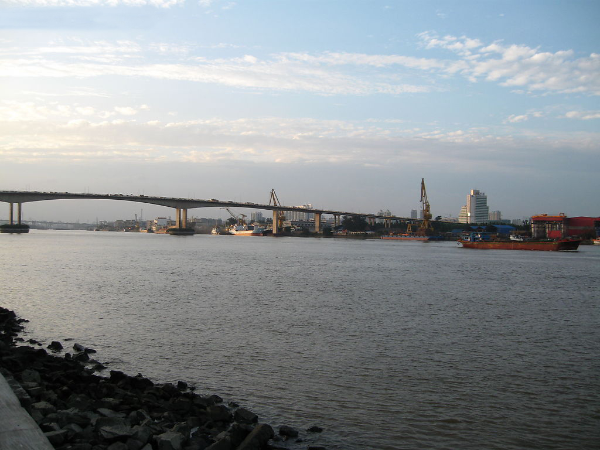

Looking back at the bridges of old China, the Yangtze River is the Tianzhu, three bridges on the Yellow River: Jinpu Railway Bridge of Jinpu Railway, Zhengzhou Railway Bridge of Jinghan Railway and Huanghe Bridge of Lanzhou City, and some bridges in major cities such as Shanghai, Tianjin and Guangzhou. It was not built by foreign merchants.
The only thing we can be proud of is the Hangzhou Qiantang River Bridge, which was built by Mr. Mao Yisheng. The bridge was led by a group of international students to design and supervise them. However, the actual construction was still contracted by Danish Kangyi Yangxing for the substructure and caisson foundation engineering, and the upper structural steel beam was contracted for manufacture and installation by Yingshangmen Menlang. Old Chinese contractors have not yet built the capacity of the bridge, and the government transportation department does not have a bridge construction team. It can only do some road bridges and culverts. (At that time, the highest level of Chinese bridge engineering team was pushed by the Shanghai Municipal Bureau of Works led by Mr. Zhao Zukang. Before the liberation, they had designed and built several reinforced concrete cantilever bridges across the Suzhou River, which still play a role. This team is also At the beginning of the liberation, the important technical force of bridge construction in China was later established as the Shanghai Municipal Government Engineering Design Institute.
Learn from the Soviet Union and build a bridge across the river
In 1952, the government decided to build the first Yangtze River Bridge, the Wuhan Yangtze River Bridge, to make Tianzhu change the way. To this end, the Ministry of Railways Bridge Engineering Bureau and the Ministry of Railways Science Research Institute were established to study and study the Soviet Union's technology in steel bridge fatigue, welding, vibration, bridge structure design, manufacturing and construction. In the same period, in 1956, a prestressed concrete simply supported beam with a span of 23.9 meters was built on the Xinyihe Railway Bridge on the East Longhai Line. This is an important step.
The Wuhan Yangtze River Bridge, built in 1957, adopted the latest pipe and column foundation technology of the Soviet Union at that time. The upper structural steel truss adopts the new technology of tire assembly and machine model drilling. It is a milestone in the Chinese bridge in the 1950s and laid the foundation for the construction of China's modern bridge engineering technology and the construction of the Nanjing Yangtze River Bridge and the development of deepwater foundation engineering.
The Nanning Minjiang Bridge, built in 1964, is the first 55-meter reinforced concrete cantilever box girder bridge designed in China according to the theory of closed-wall thin-walled members of the Soviet Union.
The realization of prestressed concrete bridges in the 1950s enabled the Chinese bridge industry to initially possess materials, equipment and construction techniques such as high-strength steel wire, prestressed anchors, pipe grouting, and tensioning jacks.

Completion arch bridge in trouble
The national conditions of the 1950s and 1960s caused traffic construction to be in trouble. The completed arch bridge has become the preferred bridge type for building large-span highway bridges.
The Huanghugang Bridge in Hunan, built in 1959, has a main span of 50 meters. It was the largest stone arch bridge at that time. It was first constructed with Soviet-style wooden arched frame technology. Luoyang Longmen Bridge with steel arch construction, the main span of 90 meters, 1961 It is built; the main span of 112.5 meters of Yunnan Changhong Bridge, the main span of 116 meters of Fengdu Jiuxigou Bridge, so that China's stone arch bridge technology has reached a new height.
The arch bridge built by the people - double arch bridge (born in Wuxi in the south of the 1960s) is a reasonable bridge type for small-span light-stay bridges in rural areas. It is called "revolutionary bridge" and is forcibly promoted, but its characteristics make it difficult to adapt to large Span and heavy loads, as well as soft soil foundation conditions, have seen many diseases in a few years. However, some double-curved arch bridges built in areas with good geology have been used for a long time.
In order to overcome the weakness of the double-curved arch bridge, Tongji University has created a new type of truss arch bridge. The Ministry of Communications Science Research Institute has created a new bridge type of steel frame arch, which is widely used in small and medium span bridges.

China's bridge technology began to rise in the 1980s
? In the early 1970s, information on the modern cable-stayed bridge that was introduced to China began to build experimental bridges in Sichuan, Shanghai, and Shandong. The Yunyang Tangxi River Bridge in Sichuan was first built in 1975, with a main span of 75.84 meters. The core cable is made of a stay cable.
Built in 1980, Sichuan Santai Minjiang Bridge has a main span of 128 meters. The cable is made of 24Φ5 high-strength steel wire, coated with asphalt and wrapped with glass cloth, and then three layers of epoxy resin wrapped with three layers of glass cloth for anticorrosion (early anti-corrosion system) ). In 1982, Shanghai Dagang Bridge and Jinan Yellow River Bridge were built one after another. The former's cable is the same as above, and it is still used today. The latter used the lead-sleeve casing to inject cement slurry. After 15 years, the anti-corrosion failed and changed. After that, the anticorrosion system of the cable was changed to the PE pipe grouting process. The cable of the Guangzhou Haiyin Bridge was broken in 1997, because the pipe grouting process failed to ensure the fullness of the top of the cable, causing the cable to rust. It was forced to change the cable after 12 years of use; while the Dongying Yellow River Bridge (for the first time, the steel tower and steel bridge deck) was used, and the Japanese hot-pressed PE sheathed cable was used without damage.
The first Shanghai Nanpu Bridge (combined beam) spanning 423 meters across the Huangpu River was built, which also led to the production of prestressed technology and cable in China. Liuzhou OVM anchors have become the mainstream of domestic prestressed anchors; the PE hot extruded sheathed cable developed by Pujiang Cable Factory is also widely used.
Prestressed concrete beam bridges have also made great strides. In 1984, the Shayang Hanjiang Bridge with a main span of 111 meters and the Rongqi Bridge of Shunde, Guangdong Province (3 holes and 90 meters) were built. The former was suspended by hanging blue, and the latter was made by prefabricating 500T floating crane. In 1985, Songhua was built. The Jiang Bridge (7 holes and 90 meters) was built in 1986 with the main bridge spanning 120 meters in Hunan Changde. In 1988, Guangdong Province also built a seven-hole 110-meter Jiangmen offshore bridge with cantilever assembly and a prestressed concrete continuous rigid-frame bridge with a main span of 180 meters―Panyu Luoxi Bridge. These two bridges represent the highest level of China's beam bridges in the 1980s.
In the 1980s, two new types of structures were found in arch bridges: concrete-filled steel tubular arches and under-supported tie-bar arch bridges without wind bracing. The former is represented by Sichuan Wangcang Donghe Bridge (115 m main span) and Guangdong Gaoming Bridge (2×100 m medium-supported arch); the latter is Wuhu Yuanze Bridge (main span 75 m) and Guangdong Huizhou Shuimen Bridge (Three spans 40+60+40 meters) is represented. The lateral stability of the windless arch ring is guaranteed by the non-directional force effect of the boom, reflecting the international new trend.
Finally, it should also be mentioned that the Shaanxi Ankang Hanjiang oblique-legged steel bridge built in 1982, the railway bridge with a main span of 176 meters is the crown of the same kind of bridge span in the world.
In short, throughout the 1980s, China's bridge technology has made rapid progress. It laid the spiritual and material foundation for the more brilliant achievements of the 1990s.

In the 1990s, China went to the ranks of the world's bridge powers
Shanghai Yangpu Bridge is the first time to climb. The main beam spanning 602 meters of the composite girder cable-stayed bridge was the first span of the world's cable-stayed bridge when it was completed in 1994, and is now ranked third. It is another milestone in China's bridge.
Built in 1980, Sichuan Santai Minjiang Bridge has a main span of 128 meters. The cable is made of 24Φ5 high-strength steel wire, coated with asphalt and wrapped with glass cloth, and then three layers of epoxy resin wrapped with three layers of glass cloth for anticorrosion (early anti-corrosion system) ). In 1982, Shanghai Dagang Bridge and Jinan Yellow River Bridge were built one after another. The former's cable is the same as above, and it is still used today. The latter used the lead-sleeve casing to inject cement slurry. After 15 years, the anti-corrosion failed and changed. After that, the anticorrosion system of the cable was changed to the PE pipe grouting process. The cable of the Guangzhou Haiyin Bridge was broken in 1997, because the pipe grouting process failed to ensure the fullness of the top of the cable, causing the cable to rust. It was forced to change the cable after 12 years of use; while the Dongying Yellow River Bridge (for the first time, the steel tower and steel bridge deck) was used, and the Japanese hot-pressed PE sheathed cable was used without damage.
The second climb began on the Shantou Bay Bridge and was the first suspension bridge in modern China. Although the main span is only 452 meters, the suspension bridge with concrete bridge deck is not only the crown of the same type of bridge. Because of the heavier bridge deck, the main cable and anchor are equivalent to the steel bridge deck suspension bridge of about 900 meters. The construction of the Guangdong Humen Bridge (L = 888 meters), the Xiling Yangtze River Bridge (L = 900 meters) and the Jiangyin Yangtze River Bridge (L = 1385 meters) played a demonstration role.
The arch bridge achieved the third climb. After the main span of 312 meters of Guangxi Yongjiang Bridge (1996) and the main span of 330 meters of Guizhou Jiangjie River Bridge (1995), the main span of 420 meters of Wanxian Yangtze River Bridge was completed. Ranked first in the world, marking China, which has built the most arch bridges, finally reached the world's leading level.
In terms of steel bridges, the completion of the Jiujiang Yangtze River Bridge is the third milestone after the Wuhan Yangtze River Bridge and the Nanjing Yangtze River Bridge. The bridge adopts domestic high-quality high-strength and high-toughness steel to complete the transition from the riveted structure to the bolted structure. In addition, various forms of deep-water foundations have been successfully adopted in the Jiujiang Yangtze River Bridge, which has accumulated rich experience for the bridge construction of large rivers and rivers in China.
The country’s large-scale investment in transportation construction has seen a prosperous scene of blooming across the country. In the 1990s, many large-span cable-stayed bridges were built nationwide. The famous ones are: Tongling Yangtze River Bridge (L=436m), Wuhan Yangtze River Highway Bridge (L=400m), Chongqing Changjiang Second Bridge (L=444m) and Shanghai Xu. Pu Bridge (L=590 m). In addition, the Guangdong Humen auxiliary channel bridge (L=270 m) was built to create a record span of continuous rigid frame bridges. The three bridges in Hong Kong: the Tsing Ma Bridge (L = 1377 m), the Kap Shui Mun Bridge (L = 430 m) and the Ting Kau Bridge (L = 475 + 448 m) also enhance the strength of the Chinese bridge.
China's transportation began to envision a larger-scale development in the 21st century. For example, one of the main lines of the north-south highway will pass five cross-sea projects (from the north to the south, the Bohai Strait Project, the Yangtze River estuary project, the Hangzhou Bay Cross-sea Project, the Pearl River Estuary and the Qiongzhou Strait Project). The Zhoushan Islands are also undertaking an ambitious project for the joint island project, which is connected to the mainland through six inter-island bridge projects. Many of China's capital cities along the Yangtze River have adopted plans to build a number of cross-river bridges to form urban loops to solve the increasingly crowded traffic problems.